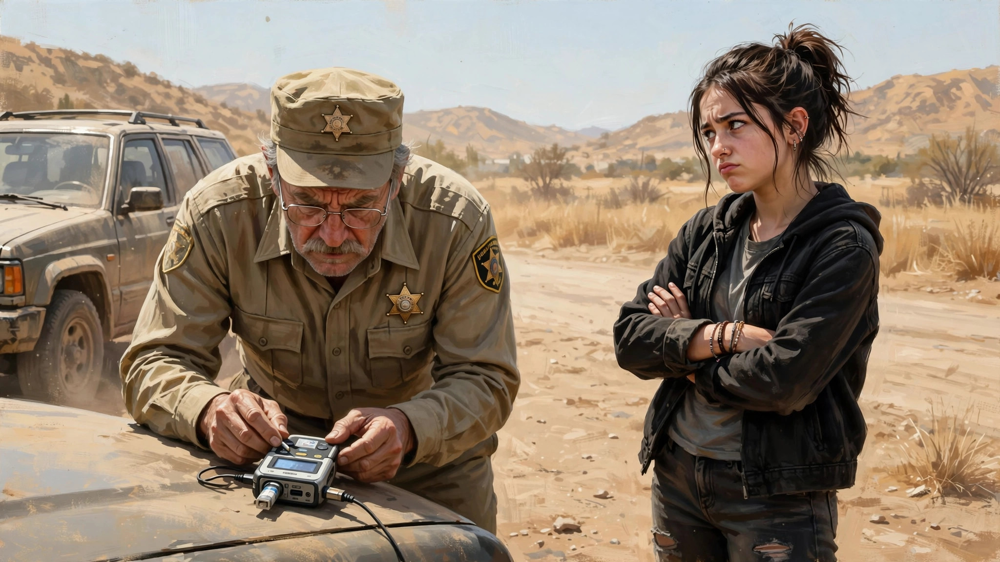
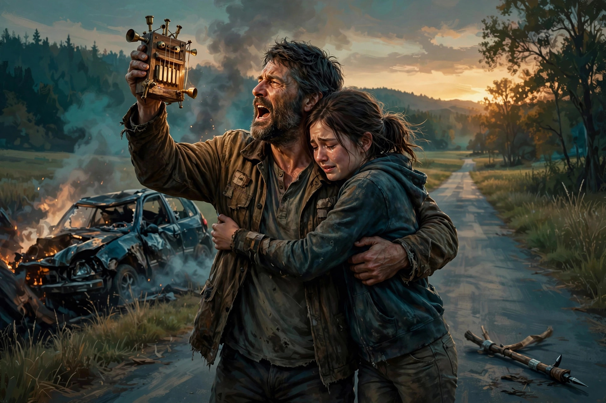

原来不靠谱是有遗传的，非亲生的也不例外
《一战再战》的预告片和片名很容易让人误以为这是一部商业动作片，但当我真正看完才发现这是一部温暖的亲情片。
（以下有剧透，请谨慎阅读。）
是的，我用了“温暖”这个词，感觉怎么也和小李子演绎的那位胡子拉喳、脏话满嘴、颓废莫名的男主不搭界。刚开始我也很意外，没想到小李子也会重拾放弃了多年的温情路线。且听我慢慢道来。
影片从一片混乱的战斗开始。一个名叫French 47的恐怖组织（自称“革命”组织），以打倒邪恶“帝国主义”为已任，对美国边境一批被拘禁的非法移民展开营救行动。一个身材标致的黑人女子持枪控制了营地一位上了点年纪的白人长官（以下简称“老白男”）。这名老白男一看到女子拿枪指着自己，不但不害怕，还表现得色迷迷的。
黑女的“革命伴侣”就是小李子。他们这次分头行动，所以小李子没看到刚才那幕戏。行动成功后他们俩随其他组织成员潇洒逃离。
接下来黑女的操作就很迷。她居然自己送上门和老白男来了一发。这件事为后面发生的所有事情种下了因。
黑女不久怀孕，小李子“喜当爹”（不知道他有没有对孩子的来源起过疑心，影片里没交代）。黑女生下孩子后，继续革命，压根不把孩子当回事，甚至都不着家。相反，小李子父性大发，再也无心参加革命。他没法说服黑女居家好好过日子，只得自己一心在家带娃。
在组织的一次抢银行行动中黑女失手开枪打死一名保安逃逸。但这次她没那么幸运，在围追堵截中最终被抓。巧了，抓他的就是老白男。
老白男以救她出去为诱饵，让黑女交代同伙名单。作为长在红旗下的观众，本以为这位一直表现得醉心于改变世界的坚定革命者会经受严刑拷打毫不屈服最终慷慨就义的。结果，从来不按牌理出牌的黑女再次让观众大跌眼镜，她爽快地交出了名单，出卖了革命同志。
这么顺利地给革命组织以重创，老白男都觉得幸福来得太突然。他因此平步青云，春风得意。正当他拿着鲜花上门去找黑女，希望继续他的罗曼史时，却发现黑女早已远走高飞了。
一晃十多年过去了，这么些年为了躲避警察，小李子一个人拉扯着闺女隐姓埋名地在某个角落低调生活。闺女出落得亭亭玉立，也到了叛逆期。小李子本色出演一位中年邋遢大叔，喝酒，吸大麻，过着醉生梦死的生活。闺女看不惯小李子的颓废劲，时不时敲打一下老爸，希望他改变一下。老爸呢表面上啥也不在乎，但其实很紧张闺女的安危。例如，让闺女不要用手机（不是怕影响学习，而是怕警察追踪），取而代之随身携带组织的一个“联络神器”。当完全值得信任的人持有另一个同样的神器靠近时，这个神器就会播放特定的音乐（听上去不那么靠谱）。这么做是以防哪天警察找上门来，组织内的人方便把闺女转移到安全地带。
安全度过了十多年，小李子父女早就放松了警惕。结果最担心的事还是来了。
老白男不知哪里得到消息，发现了小李子父女的大概藏身方位，于是展开追捕。
讲述追捕过程之前先插一段老白男的秘密经历。老白男通过一个政客牵线搭桥找到一个由另一帮有钱有权的老白男组成的神秘组织。可以简单地把这个组织理解为一个将白人至上主义和纳粹主义奉为信条的邪恶机构。邪恶组织经过对老白男的一番考察决定吸纳他。老白男意识到他过去和黑女的那段经历以及有可能是他骨肉的黑女的闺女将是他最终取得邪恶组织信任的绊脚石。于是就有了对小李子父女的这番大追捕。
回到追捕。从一开始，小李子父女俩就分开逃亡。话分两头，在老白男的突击追捕中，闺女差点被抓，幸亏组织里有人提前去救出了闺女。但不让人省心的闺女却因为偷藏了一部手机在身上害了救她的一堆人不说，自己也落网了。
小李子那头也不顺利，同样也是因为他的不靠谱。他这不靠谱程度比他闺女还离谱（所以说有其父必有其女），他居然忘了关键时可以救命的联络组织秘密电话的口令，导致无法得到关于接头的具体信息。
无奈之下他先去找一位老友（也是闺女的跆拳道还是柔道老师）求助。老友很仗义，也很有人脉，果然帮了大忙。先是为小李子找到临时藏身之处，让他有机会解决联系口令的问题（具体怎么解决就不提了总之很搞笑的一段，这一段也是整部影片脏话最密集的一段）。接着还为小李子提供了继续逃亡的协助。但小李子的逃亡过程有点曲折，甚至一度被捕。好在最后在老友帮助下被组织营救出来。
再回到闺女这边。她落在老白男手上，老白男挑明了她可能是他女儿。甚至带来了便携式DNA测试仪来现场测DNA，就是想快点确认他们是否亲父女。他说如果检测证明他们不是亲父女，那就立刻放她走。但如果是会怎样就没明说（听口气不像好结果）。

闺女不但不害怕，还毫不掩饰对老白男的鄙夷。尖刻地嘲笑老白男穿增高鞋，紧身衣（暗示他是gay）。（叛逆期的青少年嘴巴就是毒，不过在这个场景下我喜欢）
测试结果显示他们果然是亲父女（小李子头上顿时绿意盎然）。老白男毫不犹豫地开车带走了闺女，还是没说他要怎么处置她。原来他是想找人除掉亲女儿灭口，以免被邪恶组织发现会对他不利。
好在老白男找到的那个帮他干脏活的人良心未泯，关键时刻舍身救了闺女。闺女得以开车逃脱。
再回到龌龊的老白男，他自以为得手后准备回去找组织。没想到组织已经发现他和黑女乱搞还生了个闺女的事情。那个充当引荐人的政客受组织指示亲自来清理门户。正好撞上返程的老白男，掏出霰弹枪冲着老白男脸上就是一枪。老白男人仰马（车）翻，暂时下线（后面你会知道为啥这里加暂时俩字）。
政客干掉老白男后并没有回去交差，而是继续追杀闺女，打算斩草除根。他不久就追上闺女，实力悬殊下，眼看闺女危在旦夕。没想到聪明的闺女设了个圈套，反杀了政客。这时闺女的不靠谱老豆（小李子）才姗姗来迟。惊魂未定的闺女不知来者何人，以为是杀手的援军，差点误伤老豆。老豆拿出组织神器播放音乐，然后大声表明身份，闺女才意识到是亲爸来了。父女俩终于团圆，抱头痛哭。

电影最后还交代了下老白男的结局。不对，你会说，老白男不是被霰弹枪贴脸杀了吗？不错，但他居然活下来了。你就说是他命大还是编剧的脑洞大吧。总之他贴脸挨了一枪，就是没下线，你说神奇不神奇。
最后他带着一张恐怖的破脸穿的人模狗样的到组织总部来表忠心了。没想到等待他的是最后一个大惊喜，也是纳粹的传统保留节目——毒气室。可谓求锤得锤。
整部片子到此基本讲完了。剧情还是一波三折，比较热闹和吸引人的。这部电影给我们最大的启示就是，人的本性是不变的。有人生来善良，有人生来邪恶。这种本性不会因为他为人父母而改变。小李子再怎么邋遢放荡颓废，不变的是他心底里始终闪光的善良。也许他早已知道自己头顶绿意盎然，那又如何，他对闺女的疼爱和呵护是刻在骨子里的。
当然，本性不变也不代表基因决定论。闺女就是很好的例子。这里就不得不佩服咱们古人的智慧了：近朱者赤近墨者黑。正因为闺女是小李子一手带大的，所以就算她身上有不靠谱的妈（这个妈是真不靠谱）和狠毒的老白男亲爹的基因，在养父的积极影响下，她仍然成为了一个正常、善良（虽然有时如她养父一般不靠谱）的人。Good for her!